Części elektroniczne
Rezystor
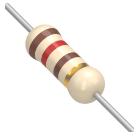
Info o rezystorze
Kondensator
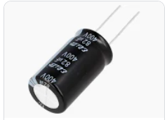
Info o kondensatorze
LED
Info o LED
Wyświetlacz siedmiosegmentowy
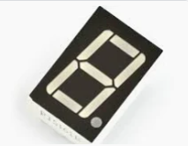
Info o wyświetlaczu
Klawiatura matrycowa 4x4
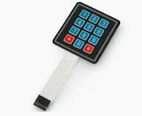
Info o klawiaturze
Mikroswitch
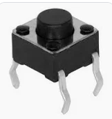
Info o mikroswitchu
Fotorezystor
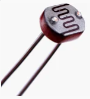
Info o fotorezystorze
Przekaźnik
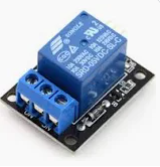
Info o przekaźniku
Silnik krokowy
Info o silniku krokowym
Servo SG-90
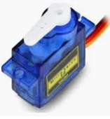
Info o serwomechanizmie
Potencjometr 10k
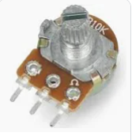
Info o potencjometrze
Enkoder inkrementalny
Info o enkoderze
Czujnik ultradźwiękowy
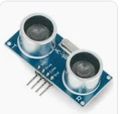
Info o czujniku ultradźwiękowym
Czujnik magnetyczny - kontaktron
Info o kontaktronie
Wyświetlacz LCD
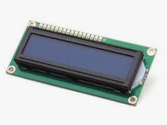
Info o wyświetlaczu LCD